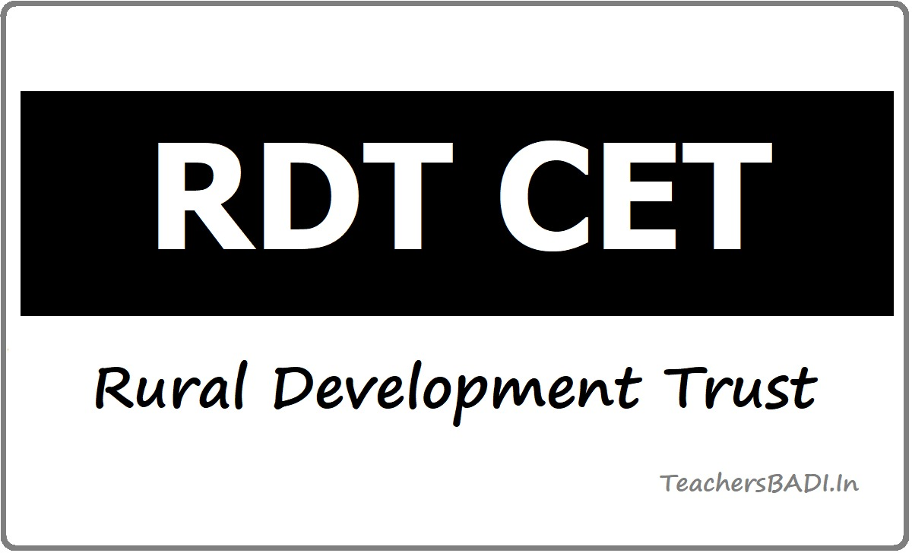
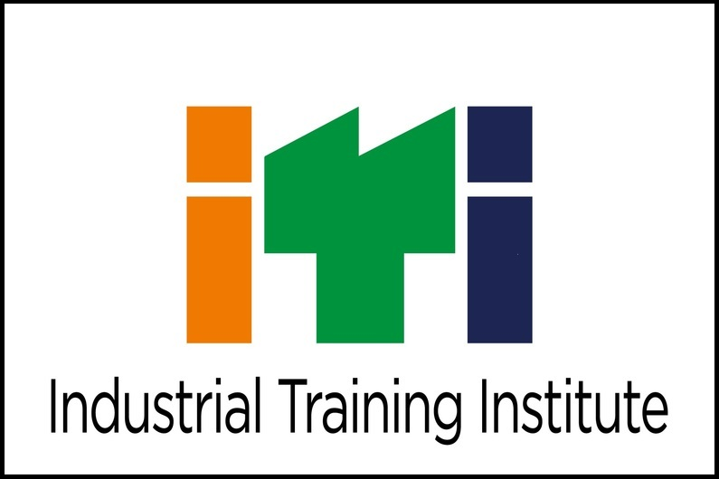

RDTSet

ITI
This stands for Mathematics, Physics, and Chemistry. This course is considered the most popular choice after the tenth standard for many Indian students because of the vast career opportunities it offers after finishing higher education.
The full form of BiPC is Biology, Physics and Chemistry and is a subject combination in the science stream. BiPC courses commonly include MBBS, BSc Nursing, BSc Physics, BSc Chemistry, BSc Zoology, BSc Botany, B Pharmacy and Paramedical courses.
Finance, Economics, Accountancy, Business and Management, etc. MEC subjects help students have basic knowledge about the field so that they can later opt for related courses for higher education.
After completing the tenth standard, it is an excellent option. The student has a variety of academic possibilities front of him, such as After completing intermediate CEC courses, students can enrol in a variety of three-year Bachelor's degree programmes, including B.COM, B.A., BBM, and BBA.
The main benefit is you can choose which field you want to go engineering or medical because you can prepare for both NEET and JEE . Mbipc subjects are critical in today's world, as we all know. It has also become a basic topic in every major Indian institute.